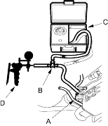
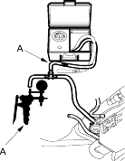

- Remove the fuel cap.
- Remove the vapour line from the EVAP two way valve (A) on the fuel tank, and connect it to a T-fitting (B) from the vacuum/pressure gauge 0-100 mm Hg (0-4 in. Hg) (C) and the vacuum pump/gauge (D) as shown.

- Apply vacuum slowly and continuously while watching the gauge. The vacuum should stabilise momentarily at 0.7-2.0 kPa (5-15 mm Hg, 0.2-0.6 in.Hg).
If the vacuum stabilises (valve opens) below 0.5 kPa (5 mm Hg, 0.2 in.Hg), or above 2.0 kPa (15 mmHg, 0.6 in.Hg), install a new valve and retest. - Move the vacuum pump/gauge hose (A) from the vacuum fitting to the pressure fitting, and move the vacuum/pressure gauge 0-100 mm Hg (0-4 in. Hg) hose (B) from the vacuum side to the pressure side as shown.

- Slowly pressurise the vapour line while watching the gauge. The pressure should stabilise momentarily above 1.3-4.7 kPa (10-35 mm Hg, 0.4-1.4 in.Hg).
- If the pressure momentarily stabilises (valve opens) above 1.3-4.7 kPa (10-35 mm Hg, 0.4-1.4 in.Hg), the valve is OK.
- If the pressure stabilises below 1.3 kPa (10 mm Hg, 0.4 in.Hg), or above 4.7 kPa (35 mm Hg, 1.4 in.Hg), install a new valve and retest.